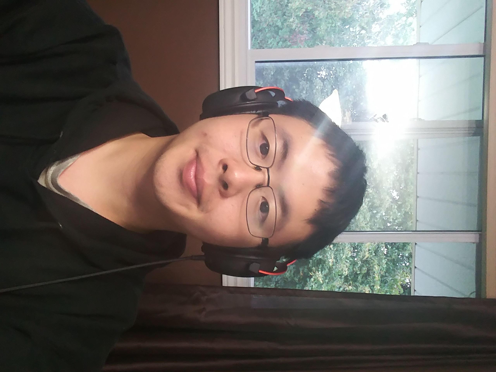

Games
Why do I like games?
They're fun! Have you ever seen a clip like this?
Well maybe that didn't make much sense to you, if you don't know much about the game.
But League of Legends is huge! Just look at how many people play this game!
This is a picture of the viewership for the past couple years.

Each of these are in the MILLIONS! of viewers by years.
Music:
Music has been a huge part of my life and continues to be. I will continue to use it even in my field as a Recreation Therapist! One of my favourite songs I've been enjoying recently is Here is some of my favourite kinds of music
| Likes | Dislikes |
| J-pop | Heavy Metal |
| K-pop | Screamo |
| pop/country | Techno |
Another thing I enjoy!
Something else I really love in Anime. I used to be afraid of sharing this but now, I am okay with it. Here's a fun little clip I've always enjoyed. Although that might not have made much sense, so here's a really generic one that people can enjoy with knowing what is happening!
My favourite genres of anime are:
- Romance
- Music
- Action
- Slice of Life
- Drama
- Magic
- Isekai (another world)
- Fantasy
- Horror
- Mecha
- Gore (lots of blood)
- and many others
As you can see, I enjoy a lot of genres and don't dislike as many, although the ones I dislike are pretty common for the older shows.
You know though? Something Anime has taught me is that I need to be myself. I shouldn't be afraid of being myself. If people like me then that's awesome but if not, then that's too bad. I've brought this with me throughout my time as a Recreation Therapist, to explore my own interests at all times instead of forcing myself to be like someone else.
Thank you for reading about my me!
